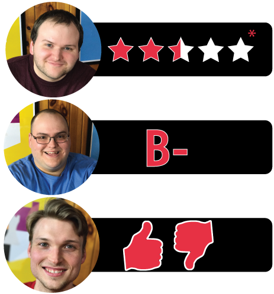

This week Board Crazy reviews Gwent, a collectible card game made for The Witcher 3: Wild Hunt. These decks were made as a limited edition add-on to the video game. Keep reading to see what we thought of this card game!
D reviews Gwent
 (Author’s
note: this review is meant to accompany our gameplay video and will not
go in-depth on the game’s rules. If you’re interested in learning how
the game is played, please watch the video. It’s not bad.)
(Author’s
note: this review is meant to accompany our gameplay video and will not
go in-depth on the game’s rules. If you’re interested in learning how
the game is played, please watch the video. It’s not bad.)

Foltest, Lord Commander of the North. Good against weather, not so good at clearing out spies.
This is a weird thing to review. Gwent, as a collectible card game/side activity in The Witcher 3: Wild Hunt video game, is a real gem. Expanding your collection and roleplaying Geralt of Rivia as a cards-obsessed fiend is fun enough that I bothered to find every single damn card in the game, including many long after I had beaten its (not inconsiderable) story. Gwent, as a standalone, physical card game where you start with full decks at your disposal, is a fun diversion, but also clearly not something designed to be analyzed thoroughly by critics. These decks were created as (awesome) limited edition content for people who bought the video game, not as proper releases meant for mass consumption, so I’ve been iffy about the notion of reviewing Gwent since almost immediately after we decided to play it.
Good news first: for what they are, these cards are great. They’re large, sturdy and feature all of the beautiful artwork shown in the in-game versions. It just feels nice to hold these things in your hands. The surrounding packaging is fine, although most of the few other components, like the scorecards, are largely unnecessary. The rulebook is pretty slight, even for a game as simple as Gwent, and seems to take for granted that the players already know all the rules. Most importantly, the game itself manages to retain a fair bit of the fun found in the digital version, albeit with a handful of obvious problems.
The very nature of a deck-building games makes them difficult to balance, but the video game at least had the luxury of scaling up the difficulty at a mostly steady pace if players progressed through the game in a logical way. It wasn’t perfect, but it was capable of producing some very tense, exciting moments. It might seem like all players having access to all of the cards in their deck might solve that problem, but these decks really aren’t perfectly balanced against each other anyway, and your chances for success will likely still hinge on the quality of your starting hand. Furthermore, much of the fun of video game Gwent lied in collecting the cards, so the removal of that aspect is fundamentally crippling to its potential. In a better world, Gwent would be big like Pokémon or Magic: The Gathering, and available in its true form.
But hey! In good news, there is that new, standalone Gwent video game coming out soon. I haven’t played much of the open beta, but it looks like the good folks at CD Projekt have done a fine job of tweaking the game to make it a better PvP experience, in addition to making some quality of life improvements in general, so that’s cool. As a video game and side activity, I give Gwent very high marks. It is quick, strategic and satisfies that “collect ‘em all” urge I feel whenever I’m tasked with hunting down X number of things. Sadly though, a finely-crafted, tabletop experience of Gwent is still just a dream.
D’s Rating: Two and One-Half Stars out of Five*.
Will reviews Gwent
The Monsters Deck, a lot larger than Will’s deck.
 As
I’m sure my colleagues have pointed out, the physical card version of
Gwent was an add-on for individuals who purchased a deluxe edition of The Witcher 3: Wild Hunt.
It’s not something you can purchase at your local gaming store, and it
most likely never will be. Therefore, I’m going to judge it based on the
fact it was made as bonus material and not as a full-fledged tabletop
card game. Even with this altered standard, Gwent is a pretty
entertaining game.
As
I’m sure my colleagues have pointed out, the physical card version of
Gwent was an add-on for individuals who purchased a deluxe edition of The Witcher 3: Wild Hunt.
It’s not something you can purchase at your local gaming store, and it
most likely never will be. Therefore, I’m going to judge it based on the
fact it was made as bonus material and not as a full-fledged tabletop
card game. Even with this altered standard, Gwent is a pretty
entertaining game.
From a build quality and art design standpoint, these cards are way above average – bordering on great. They are rather large and brawny, so bending them is difficult. And then there’s the artwork, which is taken directly from The Witcher 3 video game. It’s actually quite striking in its design, and I didn’t notice a single flaw on any of the cards. Fans of the video game series will be more than pleased if they purchase these decks – there exactly what you’d expect real life Gwent cards to look and feel like. If I had to grade Gwent based purely off build and appearance, I’d give it an A.
Unfortunately, I also have to consider gameplay when grading this game – it is, after all, the most important part. Anyone who’s played the video game knows that Gwent is a fantastic tabletop experience. However, part of the appeal of Gwent (in the Witcher video games) is collecting the cards slowly over time, compiling the deck piece by piece. In fact, I feel like that’s how Gwent was originally balanced – the video game developers knew that most people weren’t going to have all the cards. Your opponents in the video game were in the same situation (not having a full deck), so everything felt like it was fair and even. Then there’s this physical version – every deck is complete, and every card is featured. In theory, this is a good thing, but in reality, some of the decks just don’t cut it, especially against an experienced opponent.
Basically, this is the problem with Gwent, both in real life and in the video game – it just wasn’t balanced properly. If everyone has access to full decks, then fairness goes out the window. For instance, the Nilfgaardian Empire (one of four decks) is stacked with spies, which are special cards that allow you to add cards from you deck into your hand. If you set your deck correctly, you can optimize your chances of drawing spies multiple times, which can end up being extremely frustrating and unfair for your opponent. The same imbalance applies to the Monster deck, which can lead to dozens of cards being mustered into battle, if played properly. Granted, there’s no guarantee you’ll draw these cards, but most of the time, these decks have a clear advantage.
That’s not to say that Gwent isn’t worth playing; it definitely can be fun. And the other decks, the Northern Realms and Scoia’Tael, have their charms. I would say that the Scoia’Tael are far and away the worst deck in the game, but given the challenge they present, advanced players should find it intriguing to use them. All in all, I actually really like the physical card version of Gwent, even if it sort of misses the point of the video game version. Objectively, it is undoubtedly imbalanced in many ways, but the core rules and gameplay are very well thought out. If you’re a fan of The Witcher series, you’ll want these as collectibles. After all, that’s all they were meant to be. The fact you can actually play them is a really awesome bonus.
I’ll give Gwent a: B-
Graham reviews Gwent
Shilard Fitz-Oesterlen, Quadruple Agent.
 Obviously,
I don’t have as much experience with Gwent as Will and D, so naturally I
won’t have as much insight as my colleagues. And for perspective, I
didn’t play The Witcher, so I am going to review Gwent as a completely
developed tabletop game. Although, had I played The Witcher, I don’t
think that would change my opinion too much about Gwent.
Obviously,
I don’t have as much experience with Gwent as Will and D, so naturally I
won’t have as much insight as my colleagues. And for perspective, I
didn’t play The Witcher, so I am going to review Gwent as a completely
developed tabletop game. Although, had I played The Witcher, I don’t
think that would change my opinion too much about Gwent.
First, I want to point out that there are clearly some significant power balance issues in Gwent. Even though D won the match against Will with the Scoia’tael deck in our gameplay video, I found that it was a very tough deck to play with in previous games. It is definitely a little more balanced against the Monsters deck, but it’s practically useless against Nilfgaard and the Northern Realms. The Nilfgaard deck seems like it’s slightly over-powered. Here’s how the games with Nilfgaard seem to play out:
- Nilfgaard vs. Scoia’tael – Forget about it. Scoia’tael just can’t win this one, unless Nilfgaard gets extremely unlucky.
- Nilfgaard vs. Monsters – Slightly more balanced, but Monsters needs to have a strong hand and a pretty sound strategy to win this match-up.
- Nilfgaard vs. Northern Realms – This is the most even match-up because both decks have a decent amount of Spies. However, if Nilfgaard can still play their cards right, they should be able to outlast the Northern Realms most games.
As you may have noticed, it seems your ‘power of hand’ is based on number of spies you hold. You can (and should) just collect spies, and with some help from decoys and healers, you have a pretty easy path to victory. I don’t know if this changes in the video game version at all, but it pretty much limits you to only a few fair match-ups. This really hurts the game’s replayability.
With that said, the rest of Gwent is pretty fun. There is a lot of thought and strategy that goes into building your decks, if you’re not Nilfgaard. The play is exciting, and I love that each game is best-of-three – it simply puts that much more thought into your strategy. Considering I always feel like I need to win, it’s interesting to be put in a position where it’s better for you to lose and save some cards for the next round. Also, some of the stacking abilities between cards can be awesome to play. And it would be wrong of me not to mention the card design – the artwork is great, and the cards themselves are durable and large. Finally, it’s quick and very easy-to-learn, which is ideal because beginners can join and have a rousing time.
As I mentioned in the beginning, I’m reviewing Gwent as if it were a tabletop game and not as an add-on of a video game. That being said, the balancing issues are just too severe to really take the game too seriously. If Gwent ever gets revised and balanced, then it will be a consistently entertaining experience. At this point, I don’t think the game is deserving of either a positive or negative rating, so for the second week in a row, I will keep it neutral and give one thumbs up and one thumbs down.

Leave a Reply
You must be logged in to post a comment.